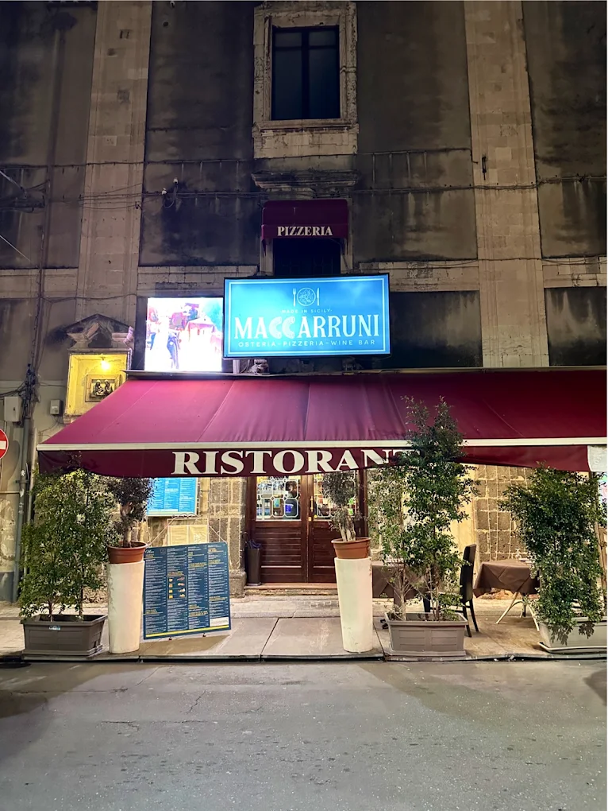
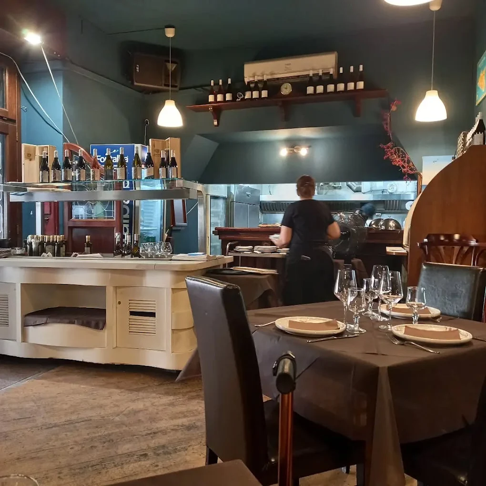
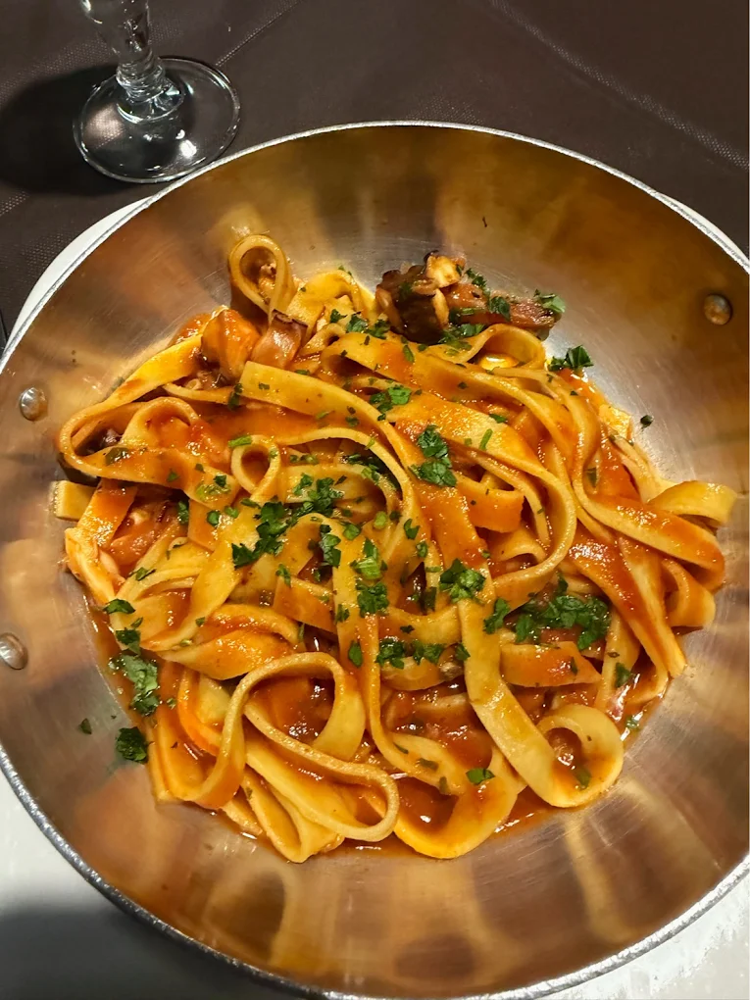
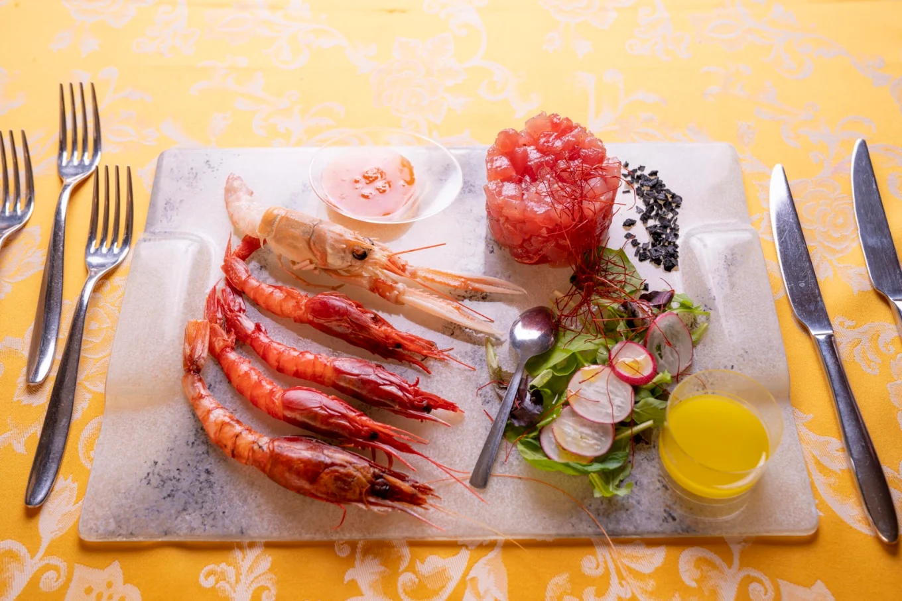
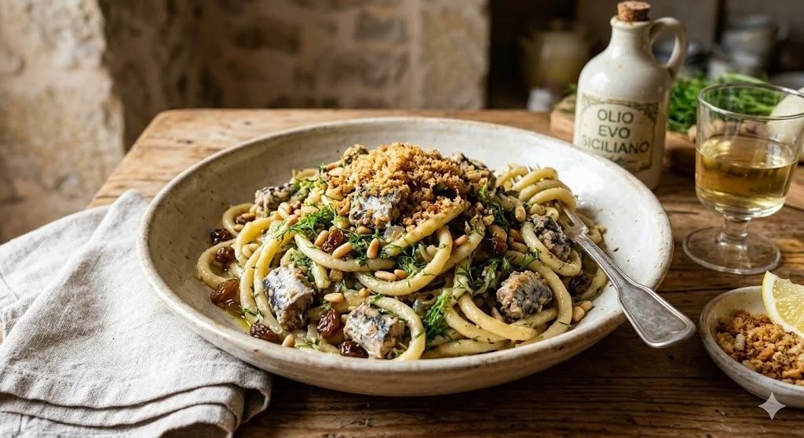
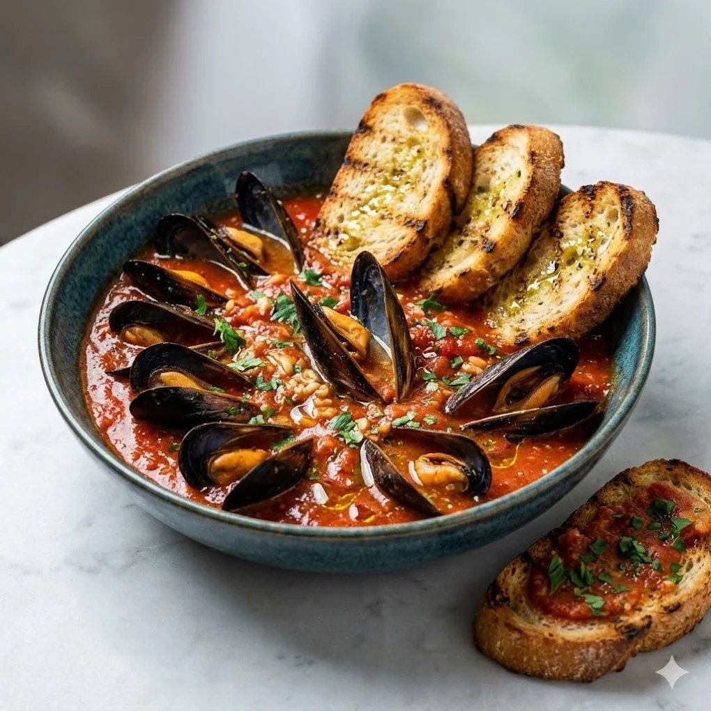

OsteriaPizzeriaWine BarCatania
Pasta fresca,
fatta in casa.
Mare di Sicilia, brace e buon vino, a cento metri dal Duomo.
- Tutti i giorni11:30 – 02:00
- 4,5 / 5511 recensioni Google
- Tavoli all’apertoVia S. Giuseppe al Duomo, 19
La storia
Nel cuore di Catania, a tavola come a casa.
Maccarruni nasce nel cuore di Catania, a soli 100 metri dal Duomo e dalla storica Via Etnea, per offrirti un’esperienza di gusto autentica e conviviale.
Osteria, pizzeria e wine bar: il nostro locale celebra la tradizione siciliana. La pasta è fresca e fatta in casa, il pesce arriva dal mare di Sicilia, il gambero rosso da Mazara, il pistacchio da Bronte, il maialino nero dai Nebrodi.
- 01Pasta fresca fatta in casa
- 02Pesce e crostacei di Sicilia
- 03Cucina aperta fino a tardi


Dicono di noi
Le recensioni
4,5/5
Google
511 recensioni
8,8/10
TheFork
623 recensioni
648
Tripadvisor
recensioni
Locale curato nei minimi dettagli, atmosfera accogliente e personale gentile.
The food was fresh and made to order.
Cucina di altissima qualità e una gentilezza fuori dal comune.
Our last meal in Sicily… one of the best.
Ottimo posto al centro di Catania.
Galleria
Dalla cucina alla tavola




Dove siamo
Vi aspettiamo a due passi dal Duomo.
- Indirizzo
- Via San Giuseppe al Duomo, 19
95124 Catania - Orari
- Tutti i giorni
11:30 – 02:00 - Telefono
- 095 803 3435
345 217 5320